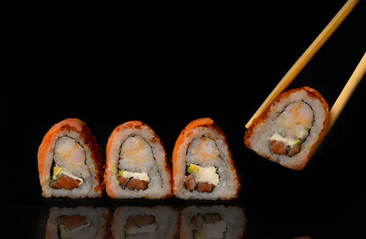
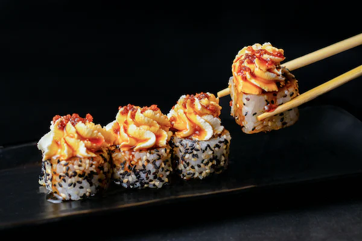
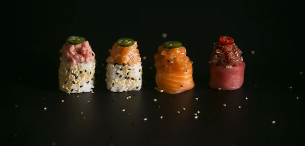

Maki Meny
Alla rullar innehåller 10 bitar
- Inside out -85kr:
- Seafoodröra (krabbstick, purjolök, majo) gurka
- California roll -85kr:
- Krabbstick, gurka, avokado, majo
- Salmon roll -89kr:
- Lax, gurka, avokado
- Spicy tuna -99kr:
- Tonfisk, gurka, avokado, chilimajo
- Dragon roll -105k:r
- Krabbstick, majo, gurka, toppad med lax och avokado
- Tempura -115kr:
- Friterade räkor/kyckling/tofu, gurka, majo, avokado, toppad med avokado och fiskrom
- Yakiniku -115kr:
- Skivad entrecôte, gurka, avokado, majo, teriyakisås
Nigiri Meny
- 8 bitar -89kr:
- 1 lax, 1 avokado, 1 räk, 1 krabbstick, 1 ägg, 2 maki, 1 insideout
- 10 bitar -99kr:
- 1 lax, 1 avokado, 1 räk, 1tonfisk, 1 krabbstick, 1 ägg, 2 maki, 2 insideout
- 12 bitar -119kr:
- 2 lax, 1 avokado, 1 räk, 1tonfisk, 1 krabbstick, 1 ägg, 2 maki, 3 insideout
- 16 bitar -149kr:
- 2 lax, 2 avokado, 2 krabbstick, 1 räk, 1 tonfisk, 1 ägg, 3 maki, 3 insideout
- 30 bitar -289kr:
- 5 lax, 3 krabbstick, 2 avokado, 2 räk, 2 tonfisk, 2 ägg, 2 tofu, 6 maki, 6 insideout
- 45 bitar -409kr:
- 8 lax, 4 avokado, 3 krabbstick, 3 räk, 2 tonfisk, 2 ägg, 2 tofu, 10 maki, 10 insideout
Veg Maki Meny
- Vegan roll -79kr:
- Avokado, mango, gurka
- Vego spice -79kr:
- Tofu, avokado, gurka, chilimajo

Varmrätter
- Röd curry -105 kr/120 kr
- Phad thai -105 kr/120 kr
- Stekt ris -105 kr/120 kr
- Wokade äggnudlar - 105 kr/120 kr
- Friterad anka -120 kr

Special Meny
Flamberad Lax:
- 6 bitar -89kr
- 8 bitar -115kr
- 10 bitar -139kr
toppad med teriyakisås och vårlök
Lax Nigiri:
15 kr/st
- 8 bitar 4 avokado 4 lax -115kr
- 10 bitar 5 avokado 5 lax -145kr
- 12 bitar 6 avokado 6 lax -165kr
Avokado & Lax Nigiri:
- 8 bitar 4 avokado 4 lax -99kr
- 10 bitar 5 avokado 5 lax -119kr
- 12 bitar 6 avokado 6 lax -139kr
Sashimi
- 10 bitar -145 kr
- 12 bitar -165 kr
- 16 bitar -210 kr

Övriga Rätter
- Pokebowl -119kr:
- Välj mellan: lax/kyckling/tofu .
- Innehåller: mango, avokado, edamamebönor, picklad rödlök, gurka,sjögräs, cashewnätter och valfri sås
- Vietnamesiska vårrullar:
- 2 stycken -55 kr
- 4 stycken - 99kr
- Välj mellan: Veg/fläsk eller tofu/fläsk. Innehåller: morot, vitkål, glasnudlar, gullök och ägg.
- Serveras med sushiris, sallad och sweetchilisås
- Friterade dumplings 8st -99kr:
- Välj mellan: kyckling eller tofu. Serveras med nudlar, sallad och jordnötssås